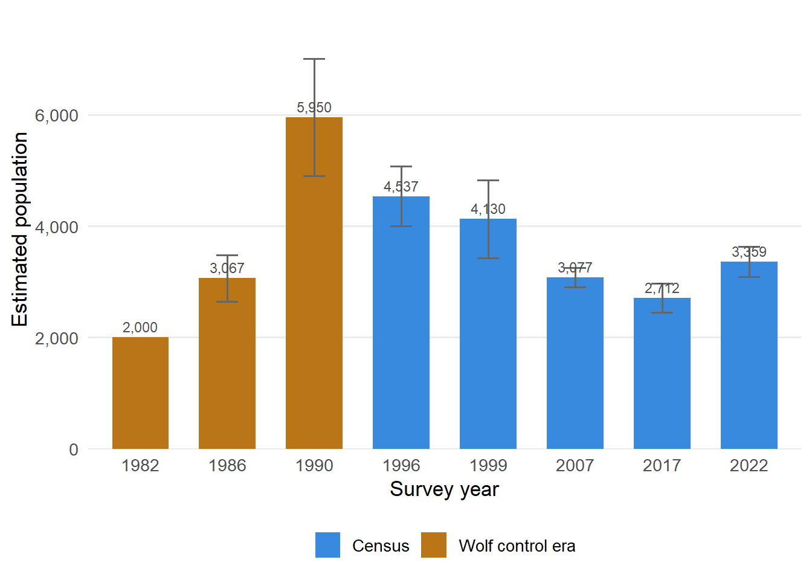
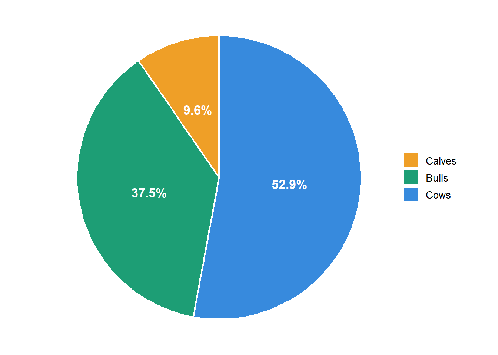
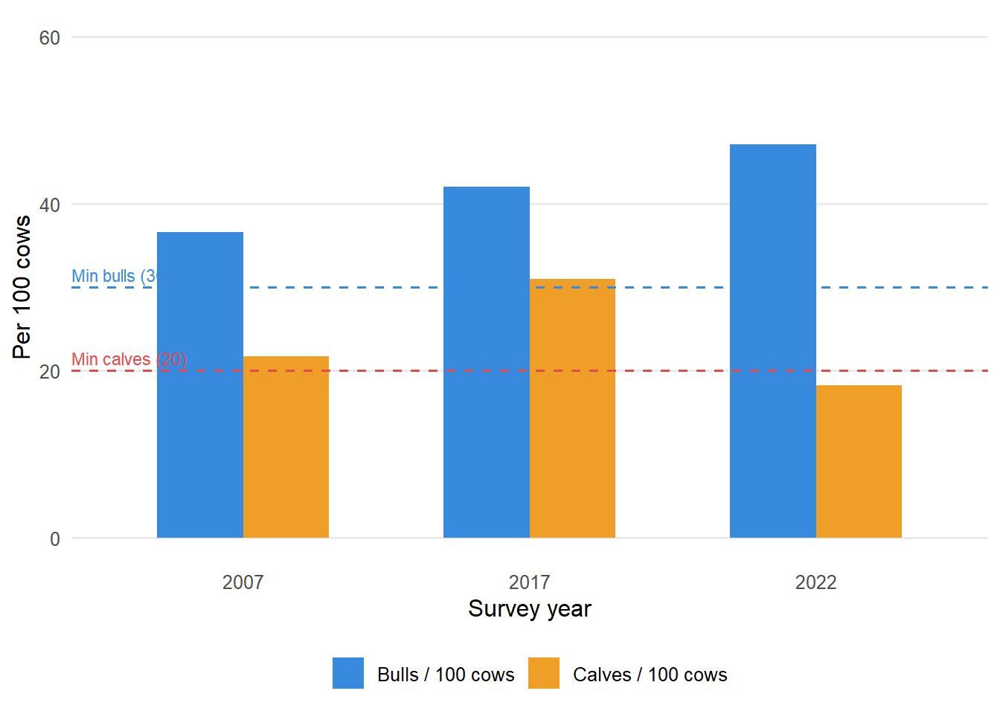
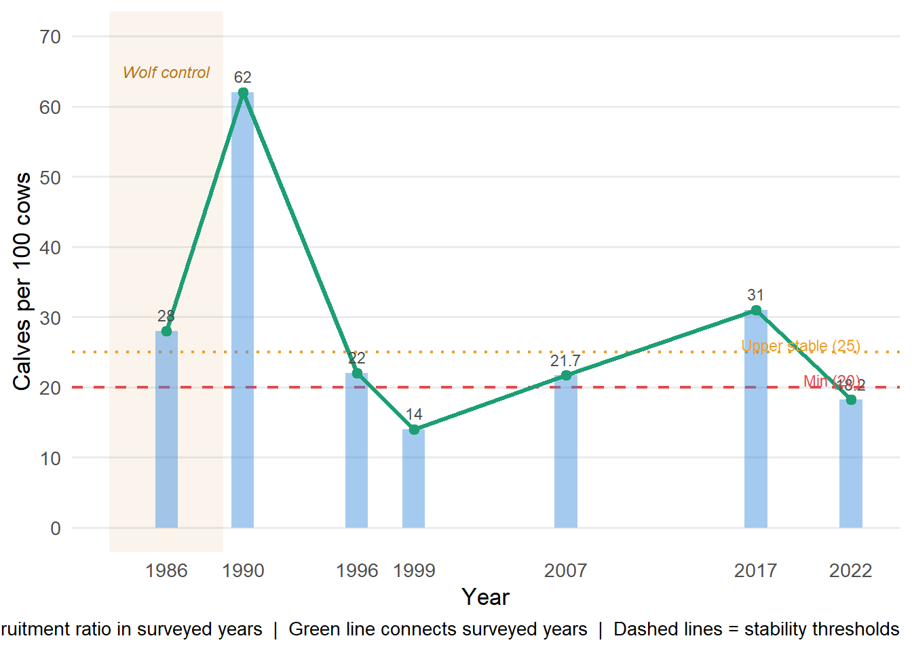

| Metric | Value |
|---|---|
| 2022 population estimate | 3,359 |
| Change since 2017 | +24% |
| Growth rate (λ) 2017–2022 | 1.044 |
| Calves per 100 cows (2022) | 18.2 |
| Bulls per 100 cows (2022) | 47.1 |
4 Population Estimates
5 Overview
5.1 Key metrics
5.2 Population estimates, 1982–2022

5.3 Herd composition — February/March 2022

5.4 Key ratios across censuses

6 Recruitment trend
Fall composition surveys have been conducted on the Finlayson herd in seven survey years since 1986, providing the longest recruitment record for any Northern Mountain caribou herd in the Yukon. A calf:cow ratio of 20–25 calves per 100 cows is the minimum needed for a stable population. Values below this threshold — as seen in 1996, 1999 and 2022 — signal an ongoing or renewed decline, while 2017’s ratio of 31.0 was the only surveyed year clearly above the stable range. Note: the plot below shows only the years in which caribou were actually surveyed; the 1986, 1990, 1996 and 1999 values are approximate figures derived from trend descriptions in the survey reports, as exact figures were not fully tabulated in the source PDFs, while 2007, 2017 and 2022 use the tabulated survey ratios.
6.1 Calf recruitment (calves per 100 cows), surveyed years 1986–2022

7 Survey methods
7.1 How the surveys work
All seven population estimates of the Finlayson caribou herd (1986, 1990, 1996, 1999, 2007, 2017, 2022) have used the same core approach: a stratified random block (SRB) survey originally developed for moose by Farnell & Gauthier (1988) and adapted for woodland caribou in the Yukon.
7.1.1 Step 1 — Stratification (fixed-wing)
Prior to the intensive count, experienced observers fly a small fixed-wing aircraft (typically a Cessna 206) through all ~214 survey blocks covering the ~6,780 km² winter range. Each block is classified into one of three strata based on caribou presence and fresh sign (tracks, feeding craters):
- Primary (high use) — ≥ 12 caribou observed or abundant fresh sign
- Secondary (low use) — < 12 caribou, or limited fresh sign
- Out — no caribou and no recent sign
Snow conditions are critical here. In 2022, recent snowfall before the survey made fresh tracks easy to distinguish from old ones — conditions were described as ideal. In 2017, a gap of several weeks without snowfall made track interpretation difficult; the initial stratification had to be redone post-hoc using a density threshold of 1 caribou/km².
7.1.2 Step 2 — Census (helicopter)
Two helicopters (typically Bell Jet Rangers with three observers each) fly all primary blocks and a random selection of secondary blocks, running parallel transects approximately 400 m apart across each block at an intensity of roughly 2 minutes per km². Two helicopters operate simultaneously to minimise the chance of animals moving between blocks during the survey. Each caribou group is:
- Counted
- Classified into cows, calves, young bulls, and mature bulls
- Located by GPS
7.1.3 Step 3 — Extrapolation for unsurveyed secondaries
Because only a subset of secondary blocks is flown, the average caribou density observed in surveyed secondaries is applied to all secondary blocks (surveyed and unsurveyed) to estimate total abundance in that stratum. This is the main source of statistical uncertainty — if sampled secondaries happen to have atypically high or low densities, the extrapolation will be biased. The 2022 report notes this may have slightly inflated the final estimate, since bull-dominated groups (more broadly distributed) were likely over-represented in randomly selected secondary blocks.
7.1.4 Step 4 — Sightability correction factor (SCF)
Aerial surveys inevitably miss some animals. A sightability correction factor is applied to scale up the raw counts. In 1986, 1990, 1996, and 1999, dedicated sightability trials were run (n = 43 total): an area just counted was immediately re-flown at higher intensity to find missed animals. A logistic regression model fitted to all 43 trials estimated a sightability rate of 77.6% (SE = 0.037), equivalent to a correction multiplier of 1.289 (SE = 0.061). This same factor — derived from the historic trials — was applied in both 2017 and 2022, since resources were not available for new trials.
7.2 Survey-by-survey comparison
| Survey | Blocks (n) | Area (km²) | Primary blocks | Secondary surveyed | SCF | Sightability basis |
|---|---|---|---|---|---|---|
| 1986 | 216 | ~6,671 | NA | NA | 1.22* | Yes |
| 1990 | 216 | ~6,671 | NA | NA | 1.22* | Yes |
| 1996 | 216 | ~6,671 | NA | NA | 1.24 | Yes (n=43) |
| 1999 | 216 | ~6,671 | NA | NA | 1.20 | Yes (n=43) |
| 2007 | 216 | ~6,671 | 42 | 16 | 1.22† | No — used avg 1996+1999 |
| 2017 | 214 | 6,779 | 37 | 35 | 1.289‡ | No — logistic regression |
| 2022 | 214 | 6,778 | 31 | 14 | 1.289‡ | No — logistic regression |
| * 1986 and 1990 SCF values based on trials conducted in those years. | ||||||
| † 2007 SCF = average of 1996 (1.24) and 1999 (1.20) trials under similar conditions. | ||||||
| ‡ 2017 and 2022 SCF derived from logistic regression across all 43 historic trials (melogit, Stata 14.2 / lme4 in R); year treated as a random effect. |
7.3 Why winter surveys? And why not mark-resight?
Why survey in late winter?
FCH census surveys are conducted in late February to mid-March, when animals are grouped on their lowland winter range. This has practical advantages: animals are concentrated in a fraction of the total range (~1,400–1,800 km² out of ~6,780 km²), making intensive helicopter coverage feasible; fresh snow improves track detection during stratification; and sightability is generally better in open, low-canopy lichen woodland than in alpine terrain.
Alternative timing is possible but harder. Calving and post-calving surveys face three key challenges noted by Environment Yukon (Morgan, pers. comm. 2025): cows are widely dispersed across the range during calving; individual cows are solitary and difficult to locate; and sightability in rugged alpine terrain is lower. These factors would substantially reduce survey efficiency and increase cost.
Why not use mark-resight?
Since the mid-2000s, Yukon’s caribou program has used a mark-resight approach for all other Northern Mountain herds: GPS collars are deployed on adult females, who serve as known “marks.” During the fall rut — when animals concentrate at high-elevation sub-alpine habitats — observers record the ratio of marked to unmarked animals, producing a statistically more precise population estimate and yielding multiple years of detailed annual distribution and movement data (Morgan, pers. comm. 2025; see also Coal River Caribou Herd 2022 Population Estimate).
The Finlayson herd cannot use this method for two reasons:
- Cultural: The Kaska First Nations, in whose traditional territory the herd lives, have not supported the collaring of animals since the 1990s. Between 1982 and 1987, 52 VHF collars were deployed with at least 20 relocations per collar, providing useful survival and distribution data; however, collaring was not continued as it did not receive support from community partners (Russell et al. 2022). The Government of Yukon has respected this position since.
- Consistency: Maintaining the SRB method preserves direct comparability with all seven previous censuses back to 1986, making the long-term trend reliable even if the absolute numbers carry some systematic bias.
The 2022 report recommends exploring novel survey methods that do not require collared animals — options might include aerial photogrammetry or distance sampling — to improve precision while respecting community values.
7.4 Key thresholds (Government of Yukon 2016 guidelines)
| Metric | Threshold | Interpretation |
|---|---|---|
| Calves per 100 cows (fall) | 20–25 | Minimum for stable population growth |
| Bulls per 100 cows | ≥ 30 | Ensures all females have breeding opportunity |
| Harvest rate (declining herd) | ≤ 1% of population | Bull-only harvest only |
| Cow harvest equivalence | 1 cow = 3 bulls | Cow removal disproportionately affects herd |
8 Management context
8.1 Key indicators
| Metric | Value |
|---|---|
| Species listing | Special Concern (SARA) |
| Wolf control program | 1983–1989 |
| Resident harvest closed | 2018 |
| Non-resident harvest closed | 2019 |
| Radio collaring on herd | Suspended (Kaska request) |
8.2 Timeline of key events
| Year | Event |
|---|---|
| Late 1970s | Herd thought to be declining; estimated ~2,000 animals (no formal survey) |
| 1982 | Wolf control program initiated; herd at ~2,000 |
| 1983–1989 | Aerial wolf control reduces wolves by ~85% from pre-control estimate of 245 |
| 1990 | Herd peaks at ~5,950 following wolf control; collaring program ends |
| 1996 | Post-rebound decline confirmed; herd at ~4,537 |
| 1998 | Permit Hunt Authorization (PHA) introduced for licensed residents; outfitter quotas set |
| 1999 | Census estimates 4,130 animals |
| 2007 | Census estimates 3,077 — roughly half the 1990 peak |
| 2017 | Census estimates 2,712 — lowest recorded; rate of decline slowing |
| 2018 | Resident licensed harvest closed |
| 2019 | Non-resident harvest closed |
| 2022 | Census estimates 3,359 — first confirmed increase since 1990 (λ = 1.044) |
8.3 Harvest history and regulations
The Finlayson herd is an important subsistence resource for the Ross River Dena Council and Liard First Nation (Kaska). Harvest management has evolved as the herd declined:
- Pre-1998: Open licensed hunting; outfitters active. Highest licensed harvest occurred in the early 1990s, coinciding with the post-wolf-control population peak.
- 1996–2004: A winter game guardian program along the Robert Campbell Highway documented subsistence harvest — including cow harvest, which has a disproportionate population impact (1 cow ≈ 3 bulls in harvest equivalence terms).
- 1998: PHA introduced — 30 permits for resident hunters; outfitters placed on quota. The sustainable harvest level was set at 3% of the ~4,000-animal 1996 estimate (120 animals), split 75% First Nations / 25% licensed.
- 2018–2019: All licensed and non-resident harvest closed following continued decline to 2,712 animals in 2017.
- Current: Subsistence harvest by First Nations continues. Historical estimates suggest subsistence alone may equal or exceed the 1% bull-only threshold (≈27 animals) considered sustainable for a declining herd.
Winter range characteristics
The core winter range lies north of the Pelly Mountains east of Ross River — a lowland forested area with abundant ground lichens under open black spruce, white spruce, and lodgepole pine. The Pelly Mountains create a snow-shadow effect, producing low snow cover ideal for lichen access. The spring/summer/fall range in the Pelly Mountains overlaps an active mineral exploration belt, creating ongoing concerns about cumulative industrial effects on the herd.